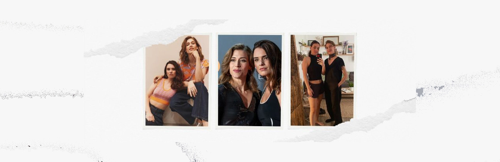

Interviews

🎬 2026
- Marta Belmonte on Fina's departure, surviving, and the arrival of Cloe (13.Jan)
- Marta Belmonte at the Impulso Creativo Festival (14.March)
🎬 2025
- Marta Belmonte for Los Lunes Seriéfilos at the Iris Awards (16.Jan)
- Marta Belmonte for La Caja de Música TV at the Iris Awards (26.Jan)
- Alba with Isabel and Candela on getting to know each other and SdL (8.Feb)
- Live for Antena3 for the 1st anniversary of SdL (17.Feb)
- At the meeting with Mafin fans for the 1st anniversary of SdL (24.Feb)
- Alba Brunet on Los Lunes Seriéfilos (12.March)
- Marta and Alba at Pasapalabra (31.March)
- About female roles in Sueños de Libertad (5.Apr)
- Alba Brunet in Salsa Romesco (16.Apr)
- Quiz to Marta Belmonte (19.Apr)
- Alba Brunet for Quisqui Podcast (20.Apr)
- Quick questions with Marta (2.May)
- Alba Brunet in ¡CORTEN! (20.June)
- About the future of Mafin (26.Aug)
- Alba Brunet on Fina's departure (26.Aug)
- Alba Brunet on SdL and message to the Mafin fandom (27.Aug)
- Marta Belmonte: "It's not that Mafin is ending; it's that Fina has left" (07.Sep)
- Marta Belmonte for Raw Magazine (31.Oct)
- Marta Belmonte for La Caja de Música TV (01.Nov)
- Marta Belmonte for Raw Magazine (24.Nov)
- Marta Belmonte for La Caja de Música TV (25.Nov)
- Marta Belmonte for FILMADOS (30.Dec)
Click on the year to watch the interviews of Marta and Alba.
🎬 2024
- Marta Belmonte for La Caja de Música TV at the premiere of Sueños de Libertad (26.Feb)
- Alba Brunet for Los Lunes Seriéfilos (18.Apr)
- Marta Belmonte in Pasapalabra (22.Apr)
- First Mafin interview for Los Lunes Seriéfilos (24.Apr)
- Marta Belmonte for La Caja de Música TV (25.Apr)
- From the set, about what will happen with Mafin (1.May)
- From the set, they answer questions from the fandom (14.May)
- Alba Brunet for Fórmula TV (20.May)
- Marta Belmonte for Fórmula TV (21.May)
- Marta Belmonte for La Caja de Música TV (27.May - premiere)
- Marta Belmonte for Raw Magazine (3.June - premiere)
- Marta Belmonte for Nanie Magazine (4.June - premiere)
- Marta Belmonte for La Caja de Música TV (4.June - premiere)
- Marta Belmonte for Los Lunes Seriéfilos (5.June - premiere)
- "Se quema" with Valen and Sofi (17.June)
- Marta Belmonte at ¡CORTEN! (1.July)
- Shangay (16.July)
- Alba Brunet for La Caja de Música TV (22.July - premiere)
- Marta & Alba for Sky Italia (9.Sep)
- Alba Brunet para Sky Italia (13.Sep)
- BelmoDay (28.Sep)
- La Caja de Música (17.Oct - premiere)
- Los Lunes Seriéfilos (18.Oct - premiere)
- Alba Brunet for Raw Magazine (27.Oct)
- Marta Belmonte for La Caja de Música TV (10.Nov - premiere)
- Alba Brunet on the Mafin phenomenon (16.Nov)
- Marta Belmonte for Los Lunes Seriéfilos (2.Dec)
- Alba Brunet for La Caja de Música TV (06.Dec - premiere)
- Alba Brunet for Raw Magazine (17.Dec - premiere)
- Marta Belmonte for Actúa Press (18.Dec - premiere)
- Alba Brunet for La Caja de Música TV (18.Dec - premiere)
Click on the year to watch the interviews of Marta and Alba.